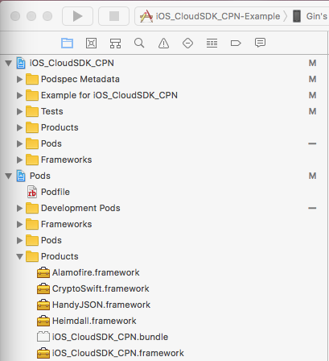
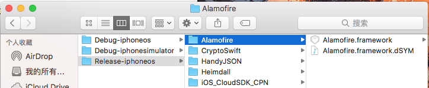

Swift Framework的封装
1. 简介
1.1 环境
- 系统环境: MacOS Sierra v10.12.5 + Xcode 9 beta2 + Swift 3.2
- 工具包: cocoapods 1.3.0 + cocoapods-packager 1.5.0插件
1 | sudo gem install cocoapods-packager |
- 工程环境: Swift/OC工程项目，转换为.framework形式的SDK
- 更新日期: 2017-08-04
1.2 目的
传统意义上的framework开发会选择Xcode建立新Project，选择Cocoa Touch Framework，用Test Project进行调试，再进行编译变量设置，然后生成库文件。但是开发阶段开发人员往往不会建立Framework类型的Project，本文将分别叙述CocoaPods和传统开发下的区别，及如何对包含第三方frame库，cocoapods组件化开发，Swift/OC相互调用复杂的工程打包。
2. 操作步骤
2.1 利用CocoaPods打包
首先需要明确的是该打包方式生成的.framework来源于.podspec指定的source，默认情况下仅包含$SRCROOT/Classes下的文件。
项目很可能是由cocoapods
1 | pod lib create YourLibName |
创建的Pods组件。
或是由
1 | pod lib lint |
从传统工程转换而成的cocoapods工程。
核心文件为YourLibName.podspec文件，该文件原本是用于Pods组件进行资源管理，项目设置，以及生成cocoapods索引。pods-packager这一工具可以自动化地分析组件内容并生成.framework包。
进行完2.1.1中细化的.podspec文件设置后，可以通过pods-packager提供的单步命令行工具
1 | pod packager YourLibName.podspec [--library] --force |
进行打包。注: --library为可选的"以.a格式打包"选项，–force强制覆盖。
2.1.1 PodSpec详解
所有’#'标示对下一行的注解，打包时可删除
1 | Pod::Spec.new do |s| |
2.2 传统方式方式打包
2.3 利用Xcode自身的编译Product获取
cocoapods开发中的xcworkspace(替代Xcode xcproject)，Build运行时会在Xcode中的YourLibName/Pods/Product目录下生成.framework文件

右键点击可以获取实际目录

其中，根据Build的Schema不同，最多可能有四种适用不同的framework，分别对应Debug和Release下的真机和模拟器。![][pic3]
而事实上，如果对Xcode的项目引用方式有深入了解的话
2.4 其他
2.4.1 Debug和Release下的.framework合并为Universal
2.4.2 图片等资源引用
2.4.3 Pod提交前步骤
确保完成pod install 或 pod update 后项目能正常通过Xcode中的Build或Compile
确保完成git add . -> git commit -> git tag -a 版本号 -m 版本介绍 -> git push的Git提交操作
确保pod lib lint YourLibName.podspec [-only-errors] --verbose --allow-warnings不出现红字Error
若为远程库git push --tags及pod repo push成功将项目推至远程仓库
边界测试
其他
交流联系
Author: Hanqing
E-mail: LuisGin93@163.com
GitHub: github.com/HqLuisGin
相关链接
- Pods-Packager 官方Git - https://github.com/CocoaPods/cocoapods-packager